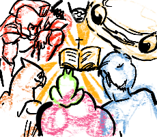

The visual characteristics of the Christian Twitch Community, relies on bright colors, and they have positive visuals. Some are more round while others are serious and sharp. There are others that have energetic tones, and the colors used also amplify the power of the image and its characteristics. The goal of most Christian Streams is to make the space as inviting as possible, whether it’s the music being comforting, the colors, or the streamer themselves. There are also some vectors that are used for emotes, and these can be solely dependent on what the streamer wants the icon to be. Razelle also has a very bright theme with her channel. Her channel features pink, red, and green. These colors are reminiscent of raspberries and the colors that they provide. Lilfrog03 has a much more soothing color scheme, and things are easier on the eyes with light greens paired with beige. The way her channel is displayed reflects her character. BiscuitBabyy has a character on screen that reacts to whatever is said. He has a retro vibe to some of his links, and these reflect how out of the ordinary his channel is, and it also displays his very relaxed behavior. The way Twitch as a website is set, the color’’s are dark and unexpected. Since the website uses purple as one of the main colors. The purple is able to be comfortable on the website, even though there are different colors from different users, the purple is able to work with those colors. The visuals on Twitch are also exciting, bright, and fun.
The black is used in the background to allow the viewers on the website to focus on the channels, because that is why people go on Twitch. Twitch has a decent amount of interesting icons concerning bits, subscriptions, Amazon Prime, and others. They use other colors like red to show alerts and things that need to be accessed. There are also gifting tiers that can be seen and they go from gold, silver, and bronze. There are also train tiers that apply the same type of format. Twitch also features a menu on the left of the screen, and this features the channels that a user is following. By scrolling up or down a user can choose who they are willing to watch and can hover over their channel to peek at what is being done. Channel goals can also be seen, this can be seen on the streamers channel or on the stream itself. The website is programed that when the streamer reaches their goal (certain amount of subs, bits, donations) the number will grow higher due to the score being reached; these are able to fluctuate depending on the channel and streamer.